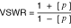

提交有关此主题的反馈。
提交有关此主题的反馈。 访问ni.com/support以获得技术支持。
访问ni.com/support以获得技术支持。沿传输线的任何阻抗失配都会导致传播信号的部分反射。阻抗差决定了反射的幅度。不匹配部分的长度决定了从该部分反射的最低信号频率。VSWR 是该信号反射的量度。
随着入射正弦波进入开关模块，一些信号沿线路反射。该反射波与入射波发生干涉。VSWR是产生的干扰波中最大振幅与最小振幅之比，如下式所示：

其中p是反射系数
反射也可以表示为反射信号与输入信号的对数比。这个比率称为回波损耗：
| RL (分贝) | = 10 log (P In / P Reflected ) |
| = 20 log (V In / VReflected反射) | |
| = -20 log (VReflected反射/ V In ) | |
| = -20 log |p| |
提交有关此主题的反馈。 访问ni.com/support以获得技术支持。